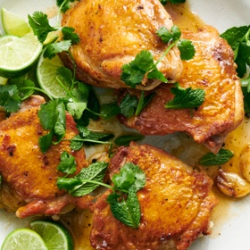

← All recipes
Crispy Chicken with Lime Butter

Servings: 4 servings · Prep: 5 min · Cook: 35 min
Ingredients
- 4 large bone-in, skin-on chicken thighs (about 2 pounds)
- Salt and pepper
- 1 tablespoon peanut or canola oil
- 2 garlic cloves, crushed
- 1/2 cup chicken stock or 1/4 cup water
- 2 tablespoons fresh lime juice, plus wedges for serving
- 2 teaspoons maple syrup
- 3 tablespoons cold unsalted butter, cut into pats
- Parsley, cilantro, basil or mint leaves, for serving (optional)
Directions
- Pat the chicken dry and season with salt and pepper. If you have time, set aside at room temperature for at least 10 minutes and up to 30 minutes.
- Heat a large skillet over medium. Add the oil and swirl the pan to coat it. Place the chicken skin side down and cook without moving it until the skin is crispy and golden brown, 20 to 25 minutes. Reduce the heat if the chicken splatters too much or browns too quickly.
- Add the garlic to the pan. Flip the chicken and cook until the bottom is lightly browned and the meat is cooked through, about 5 minutes. Transfer the chicken to a plate, skin side up. Remove all but 3 tablespoons of the fat from the pan and save for another use (see Tip).
- Add the chicken stock, lime juice and maple syrup to the skillet. Season with salt and pepper. Bring to a simmer over high, then reduce the heat to medium and cook, stirring occasionally, until reduced by half, about 3 minutes. Add the butter and continue simmering, now stirring constantly, until incorporated; the sauce will thicken and become shiny as the butter melts. Taste and add more salt and pepper as desired.
- Serve the chicken with the pan sauce, lime wedges and the optional fresh herbs (spritzed with a little lime juice and lightly seasoned with salt and pepper).
Original source: cooking.nytimes.com